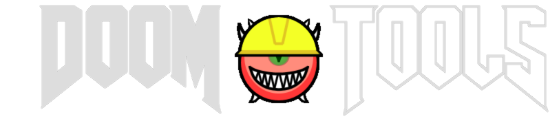

DImgConv Help
DImgConv v1.6.1 by Matt Tropiano (using DoomStruct v2.22.0)
Usage: dimgconv [--help | -h | --version]
--gui
--offsetter
[source] [switches]
--help Prints help and exits.
-h
--version Prints version, and exits.
--changelog Prints the changelog, and exits.
--gui Starts the GUI version of this program.
--offsetter Starts the graphic offsetter program in the
current directory.
[source]:
The source file or directory to read from.
[switches]:
--output [path] Sets the output path for converted files. Can be
-o [path] a single file, a directory, or a WAD file to add
entries to.
--palette [path] Sets the path to the source of target palette to use
-p [path] for conversion (Doom format). Can be a file or a
WAD. If WAD, it looks for the "PLAYPAL" lump.
--recursive If the [source] is a directory, this scans directories
-r recursively.
--mode-palettes Assumes that the incoming file or files are, by
-mp default, palettes, unless overridden by a metainfo
file.
--mode-colormaps Assumes that the incoming file or files are, by
-mc default, colormaps, unless overridden by a metainfo
file.
--mode-flats Assumes that the incoming file or files are, by
-mf default, flats, unless overridden by a metainfo
file.
--infofile [name] Sets the name of the metainfo file found in each
-i [name] directory that specifies the mode for specific
files. Default is "dimgconv.txt"
--verbose Prints verbose output.
-v
Palettes
--------
Palettes are expected to be images where the x-axis describes the colors in a
palette and the y-axis is the palette index.
Colormaps
---------
Colormaps are expected to be images where the x-axis describes the colors in a
colomap to match against a palette to create the resulting map data and the
y-axis is the colormap index.
Stuff like TRANMAPs and TINTTABs are also COLORMAPs.
Graphics
--------
Graphics, if they are PNGs, can contain the custom 'grAb' chunks for default
offsets.
The MetaInfo Files
------------------
The meta info files consist of plain text lines of the following:
[name] [mode] [x-offset] [y-offset]
[name]:
The name of the file in this directory (no extension). Can be "*" for the
default fallback.
[mode]:
One of four modes: "palette", "colormap", "graphic" or "flat".
[x-offset]:
(Optional) If mode is "graphic", specify an x-offset to set.
[y-offset]:
(Optional) If mode is "graphic", specify a y-offset to set.
Lines that are blank and lines that begin with a "#" are ignored.
Example line for "everything in this directory is a flat":
* flat
Example lines for "GRAYTALL is a graphic but everything else is a flat":
graytall graphic
* flat
Graphics with specific offsets:
m_skull graphic 0 12
m_doom graphic 30 -24
CHANGELOG
### Changed for 1.6.1
* `Fixed` [Offsetter] Resizing the window would not force a canvas redraw.
* `Fixed` [Offsetter] Switching directories with something selected could have resulted in an NPE.
* `Added` [Offsetter] HUD guide line for the status bar.
* `Added` [Offsetter] Auto-align and bulk-auto-align options (Enh. #150).
* `Added` [Offsetter] Offset Adjust and bulk-offset-adjust options (Enh. #150).
* `Added` [Offsetter] Sort by name and frame options (Enh. #150).
* `Added` [Offsetter] "Onion Skin" option for comparing previous frames (Enh. #150).
### Changed for 1.6.0
* `Fixed` Palette index 255 is considered for color matching again on Pictures. Error was in DoomStruct library.
### Changed for 1.5.2
* `Fixed` DIMGConv would not error out completely if a bad file was encountered.
### Changed for 1.5.1
* `Added` [GUI] A status bar and an auto-save switch.
### Changed for 1.5.0
* `Added` [GUI] A graphics offsetter for bulk offsetting a directory of patches. Accessible via GUI or in DoomMake Studio.
### Changed for 1.4.1
* `Fixed` Unrecognized image formats will no longer NullPointerException out.
### Changed for 1.4.0
* `Fixed` Palette index 255 was considered for color matching. This is incorrect on patches/graphics (but correct on flats).
### Changed for 1.3.2
* `Changed` Patches are not split at the first 128 pixels anymore.
### Changed for 1.3.1
* `Fixed` Tall patches not being exported/converted correctly.
### Changed for 1.3.0
* `Fixed` The recursive option now creates recursive directories properly. (Issue #100)
* `Fixed` [GUI] Some blank fields would NPE on workspace export.
### Changed for 1.2.0
* `Added` The GUI version of DImgConv.
### Changed for 1.1.0
* `Fixed` DImgConv would crash if no palette was provided but "palettes" default mode was set and a metadata file tried to change the mode for a file.
### Changed for 1.0.1
* `Fixed` DImgConv did not properly rename files to ".lmp" on convert if both source and destination were directories. (Issue #39)
### Changed for 1.0.0
* Initial Release.